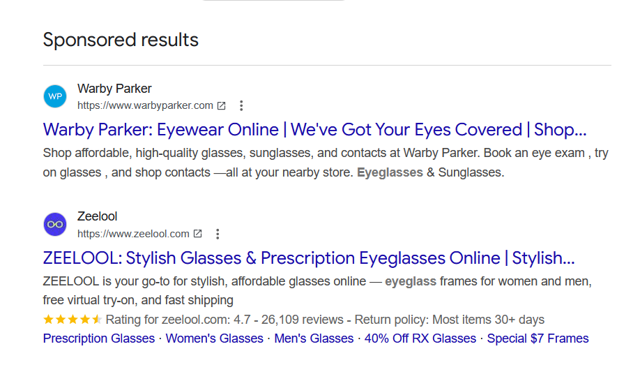

Try This
Interactive Learning
Explore Digital Ad Types
Choose an ad type to compare what it is, when it works best, its strengths and limitations, and a real-world example.
Select an ad type

Ad type analysis
Search ads
- Best use
- Positives
- Negatives
- Notes
Search ads are selected.